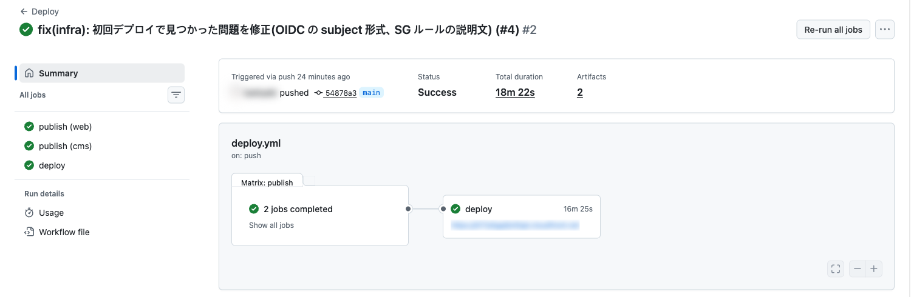
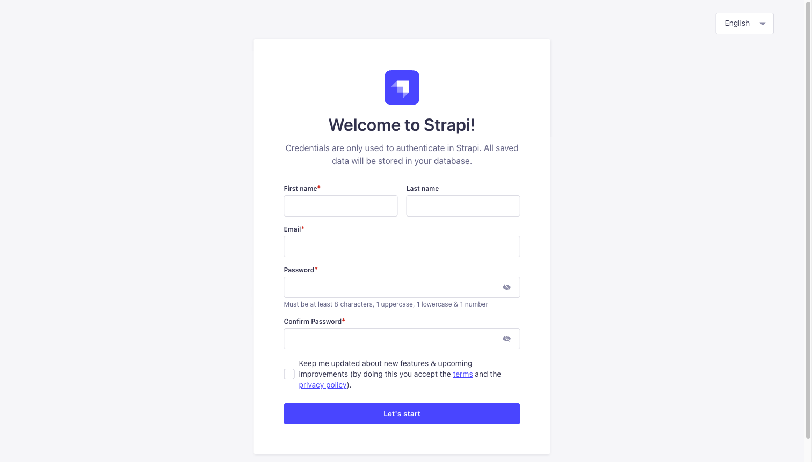
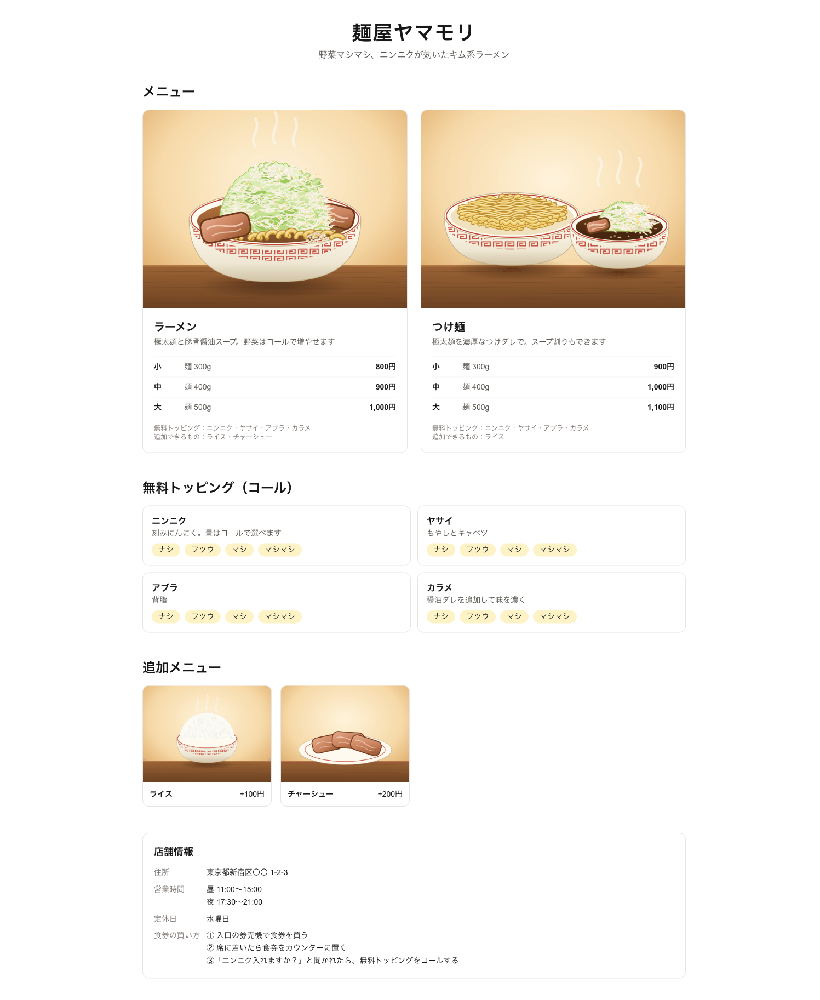

배포(CD): main에 머지하면 AWS에 반영되게 하기
05장에서 main을 "검사를 통과한 코드만 있는 곳"으로 만들었습니다. 이 장에서는 main이 바뀌면 자동으로 운영(AWS)에 반영되게 하고, 첫 배포 뒤의 운영 초기 설정까지 합니다. AWS 구성 자체는 여러분의 설계를 쓰면 되므로, 여기서는 배포의 흐름과 "값이 어디서 오는가"를 중심으로 설명합니다.
main에 머지하면 이미지가 한 번 만들어져 ECR에 올라가고, 그 이미지로 AWS가 갱신된다. 운영 관리자 등록·데이터 입력·API 토큰 설정까지 마쳐 운영 사이트가 뜬다.
1. 전체 흐름
| 이 장에서 하는 것 | 하지 않는 것 (필요하면 추가) |
|---|---|
| main 머지 → 이미지 빌드·검사·저장 → AWS 반영, 첫 배포 후 운영 초기 설정 | 자체 도메인·인증서, 스테이징 환경, 모니터링·알람. 이 예시는 운영 환경 1개, CloudFront 기본 도메인을 씁니다 |
왜 PR에서 만든 이미지를 그대로 쓰지 않나요?
PR 단계의 코드는 아직 리뷰·머지 전입니다. 그 코드에 운영 저장소(ECR)에 쓸 권한을 주지 않습니다. 또 squash 머지는 main에 새 커밋을 만들기 때문에, 운영 이미지는 그 커밋에서 만들어야 "어느 커밋이 운영에서 도는가"가 정확해집니다. PR의 빌드는 머지해도 되는지 확인하는 검사, main의 빌드는 운영에 보낼 결과물입니다. 둘은 같은 단계(.github/actions/build-image)를 씁니다.
2. 인프라 코드: 스택 3개
AWS 구성은 CDK(AWS 구성을 TypeScript로 적는 도구)로 infra/에 있습니다. 구성도는 00장을 보세요. 코드는 배포하는 단위(스택)로 셋으로 나눴습니다.
| 스택 | 담는 것 | 누가·언제 배포 | 나눈 이유 |
|---|---|---|---|
| Foundation (토대) | ECR(이미지 저장소) web·cms, GitHub Actions용 IAM 역할 2개 | 사람이 처음 한 번, 내 PC에서 | CI/CD가 쓰는 것이라 CI/CD로 만들 수 없습니다(닭과 달걀) |
| Data (상태 있음) | VPC, Aurora(DB), S3(사진), Secrets Manager(시크릿) | 배포 워크플로 | 지우면 되돌릴 수 없는 것. 삭제 보호를 켭니다 |
| App (상태 없음) | CloudFront ×2, 내부 ALB, ECS(web·cms) | 배포 워크플로 (매번) | 언제 지우고 다시 만들어도 되는 것 |
"데이터가 있는 것과 없는 것을 다른 스택으로"는 CDK 공식 모범 사례입니다(AWS CDK Best practices). 앱 쪽을 몇 번 다시 만들어도 DB와 사진은 안전합니다.
infra/
├── bin/
│ ├── foundation.ts 토대 앱 (Foundation 스택)
│ └── app.ts 서비스 앱 (Data + App 스택)
└── lib/
├── foundation-stack.ts ECR, GitHub Actions 용 IAM 역할
├── data-stack.ts network / database / media-bucket / app-secrets 를 조립
├── app-stack.ts load-balancer / cdn / cms-service / web-service 를 조립
└── (층별 파일) network.ts, database.ts, cdn.ts, cms-service.ts ...3. 처음 한 번만 하는 준비
배포 워크플로가 돌기 전에 있어야 하는 것들입니다. 사람이 한 번만 합니다.
| 순서 | 하는 일 | 어디서 |
|---|---|---|
| ① | cdk bootstrap: CDK가 배포에 쓰는 기본 자원(배포용 역할 등)을 계정·리전에 만듭니다 | 내 PC (계정·리전당 1회) |
| ② | 토대 스택 배포: ECR과 GitHub Actions용 역할 | 내 PC |
| ③ | GitHub: Environment 3tier-prod 만들기, 시크릿 2개 등록(②의 출력 값) | GitHub 설정 화면 |
실행 위치: 저장소 루트 (AWS 자격 증명이 있는 터미널)
pnpm -F infra exec cdk bootstrap aws://<계정 ID>/ap-northeast-1
pnpm -F infra foundation deploy \
-c githubSubjectPrefix="$(gh api repos/<owner>/<repo>/actions/oidc/customization/sub --jq .sub_claim_prefix)"② 가 끝나면 출력에 역할 ARN 2개가 나옵니다. GitHub의 Settings → Secrets and variables → Actions와 Settings → Environments → 3tier-prod에 등록합니다.
| 시크릿 | 등록하는 곳 | 쓰는 job |
|---|---|---|
AWS_IMAGE_PUSH_ROLE_ARN | 저장소(Repository secrets) | publish: 이미지를 ECR에 올린다 |
AWS_DEPLOY_ROLE_ARN | Environment 3tier-prod | deploy: cdk deploy |
GitHub가 AWS에 들어가는 방법: OIDC
GitHub에 AWS의 액세스 키를 두지 않습니다. 대신 실행할 때마다 GitHub가 "이 저장소의, 이 job입니다"라는 증명서(OIDC 토큰)를 발급하고, AWS는 그 내용이 역할의 조건과 맞을 때만 1시간짜리 임시 권한을 줍니다. 오래 쓰는 비밀 값이 어디에도 없으므로 유출될 것이 없습니다.
infra/lib/foundation-stack.ts
// "이 저장소의, 이런 job 만" 역할을 쓸 수 있다. sub 는 GitHub 가 토큰에 적어 주는 job 의 정체:
// <저장소 부분>:environment:<이름>(환경을 지정한 job) / :ref:refs/heads/<브랜치>(그 밖의 job) / :pull_request(PR)
const githubJob = (sub: string) =>
new iam.WebIdentityPrincipal(provider.oidcProviderArn, {
StringEquals: {
[`${issuer}:aud`]: "sts.amazonaws.com",
[`${issuer}:sub`]: `${props.githubSubjectPrefix}:${sub}`,
},
});
// ① 이미지 올리기: main 브랜치의 job 만 (PR 의 job 은 거부 → 머지 전 코드는 운영 저장소에 올라가지 않는다)
// IAM 역할의 설명에는 영문·숫자·일부 기호만 쓸 수 있다 (CloudFormation 규격)
const imagePushRole = new iam.Role(this, "ImagePushRole", {
description: "GitHub Actions (main branch) pushes app images to ECR",
assumedBy: githubJob("ref:refs/heads/main"),
maxSessionDuration: cdk.Duration.hours(1),
});| 역할 | 누가 쓸 수 있나 (sub 조건) | 할 수 있는 것 |
|---|---|---|
| 이미지 올리기 | main 브랜치의 job만 (…:ref:refs/heads/main) | ECR 저장소 2개에 push만 |
| 배포 | Environment 3tier-prod를 지정한 job만 (…:environment:3tier-prod) | CDK 배포용 역할로 갈아타는 것만 |
PR의 job은 sub가 …:pull_request라서 어느 역할도 쓸 수 없습니다. 전체: infra/lib/foundation-stack.ts
githubSubjectPrefix는 GitHub API로 받아 넣습니다. 2026-07-15 이후에 만든 저장소는 토큰의 sub가 repo:소유자@ID/저장소@ID처럼 숫자 ID가 붙은 형식입니다(저장소를 지운 뒤 다른 사람이 같은 이름으로 만들어도 구별되도록). 이름만으로 조건을 쓰면 Not authorized to perform sts:AssumeRoleWithWebIdentity로 실패합니다. API가 그 저장소의 실제 형식을 알려 주므로, 옛 저장소든 새 저장소든 맞게 들어갑니다.Environment의 보호 규칙 (선택)
Settings → Environments → 3tier-prod에서 Required reviewers(승인자)를 정하면, deploy job이 승인 대기로 멈추고 승인해야 배포됩니다. Deployment branches를 main으로 제한하면 다른 브랜치에서는 이 환경을 쓸 수 없습니다. 이 예시는 승인자 없이 "머지 = 배포"로 했습니다. 팀에 맞게 정하세요.
4. 배포 워크플로: .github/workflows/deploy.yml
main에 머지되고 앱·인프라 파일이 바뀌었을 때 돕니다(문서만 바뀐 머지는 배포하지 않음).
① publish: 이미지를 한 번만 만든다
.github/workflows/deploy.yml
# 이 러너의 Docker 가 ECR 에 push 할 수 있게 로그인한다 (job 이 끝나면 자동 로그아웃)
- id: ecr
uses: aws-actions/amazon-ecr-login@03f1aad4c6c7ffd436567f42f9384779290529bd # v2.1.7
- id: image
env:
REGISTRY: ${{ steps.ecr.outputs.registry }}
REPOSITORY: 3tier/${{ matrix.app }} # infra/lib/shared.ts 의 imageRepositoryName 과 같은 이름
run: |
echo "ref=${REGISTRY}/${REPOSITORY}:${IMAGE_TAG}" >> "$GITHUB_OUTPUT"
# 같은 커밋의 이미지가 이미 있으면(워크플로를 다시 실행한 경우) 빌드하지 않는다. 태그는 덮어쓸 수 없다(IMMUTABLE)
if aws ecr describe-images --repository-name "$REPOSITORY" --image-ids imageTag="$IMAGE_TAG" > /dev/null 2>&1; then
echo "exists=true" >> "$GITHUB_OUTPUT"
fi
# 빌드 → Trivy 검사 (ci.yml 과 같은 단계). 검사를 통과한 이미지만 다음 단계에서 올라간다
- if: steps.image.outputs.exists != 'true'
uses: ./.github/actions/build-image
with:
app: ${{ matrix.app }}
image: ${{ steps.image.outputs.ref }}
- if: steps.image.outputs.exists != 'true'
env:
IMAGE: ${{ steps.image.outputs.ref }}
run: docker push "$IMAGE"- 태그 = 커밋 SHA: 운영에서 도는 이미지가 어느 커밋에서 만들어졌는지 바로 알 수 있습니다.
- 태그는 덮어쓸 수 없게(ECR의 IMMUTABLE 설정): 같은 태그에 다른 이미지가 들어갈 수 없으므로 "태그 = 그 커밋의 이미지"가 보장됩니다. 그래서 워크플로를 다시 실행하면 이미 있는 이미지는 빌드하지 않고 건너뜁니다.
- 빌드·검사 단계는 05장의 CI와 같은 것(
.github/actions/build-image)을 씁니다. 검사를 통과하지 못하면 push하지 않고, 배포도 하지 않습니다.
② deploy: 가리키기만 한다
.github/workflows/deploy.yml
# 데이터 스택 → 앱 스택 순서로 반영한다. 바뀐 것이 없는 스택은 아무것도 하지 않는다
- id: deploy
run: |
pnpm -F infra exec cdk deploy --all -c imageTag="$IMAGE_TAG" --require-approval never --outputs-file cdk-outputs.json
echo "site-url=$(jq -r '.ThreeTierApp.SiteUrl' infra/cdk-outputs.json)" >> "$GITHUB_OUTPUT"cdk deploy는 이미지를 빌드하지 않고, 방금 올린 태그를 ECS에 알려 줄 뿐입니다. 인프라에 바뀐 것이 있으면 함께 반영하고, 없는 스택은 건드리지 않습니다. ECS는 새 컨테이너가 정상인 것을 확인한 뒤 이전 것을 내리므로 배포 중에도 사이트가 끊기지 않고, 새 버전이 뜨지 않으면 이전 버전으로 자동으로 돌아갑니다.
전체: .github/workflows/deploy.yml, infra/lib/app-image.ts
5. 설정 값은 어디서 오는가
앱은 로컬과 운영에서 같은 코드이고, 같은 이름의 환경변수를 읽습니다. 값을 넣는 곳만 다릅니다.
| 종류 | 예 | 로컬 | 운영 |
|---|---|---|---|
| 비밀이 아닌 값 | STRAPI_URL, PUBLIC_URL, MEDIA_BUCKET | .env / .env.local | ECS 작업 정의의 environment (CDK 코드에 적음) |
| 시크릿 | DB 비밀번호, Strapi 키 6개, API 토큰 | .env / .env.local | Secrets Manager. 작업 정의에는 위치만 적고, 컨테이너가 시작될 때 ECS가 꺼내 넣음 |
| 이미지에 고정된 값 | NODE_ENV=production, PORT | (개발 서버가 정함) | Dockerfile의 ENV |
infra/lib/cms-service.ts
environment: {
DATABASE_CLIENT: "postgres",
// DB 에 SSL 로 접속한다. 서버 인증서는 이미지에 넣은 AWS 인증서 묶음으로 검증 (apps/cms/Dockerfile)
DATABASE_SSL: "true",
PUBLIC_URL: `https://${props.adminDomain}`,
MEDIA_BASE_URL: `https://${props.siteDomain}`,
MEDIA_HOST: props.siteDomain,
MEDIA_BUCKET: props.mediaBucket.bucketName,
AWS_REGION: cdk.Stack.of(this).region,
},
secrets: {
// DB 접속 정보: Aurora 가 만든 시크릿(JSON)의 각 항목
DATABASE_HOST: ecs.Secret.fromSecretsManager(db, "host"),
DATABASE_PORT: ecs.Secret.fromSecretsManager(db, "port"),
DATABASE_NAME: ecs.Secret.fromSecretsManager(db, "dbname"),
DATABASE_USERNAME: ecs.Secret.fromSecretsManager(db, "username"),
DATABASE_PASSWORD: ecs.Secret.fromSecretsManager(db, "password"),
// Strapi 의 키들 (app-secrets.ts)
...props.secrets.strapiKeys,
},운영의 시크릿은 AWS가 무작위로 만듭니다(DB 비밀번호는 Aurora가, Strapi 키는 Secrets Manager가). 사람이 값을 보거나 옮길 일이 없습니다. 예외는 API 토큰 하나로, 운영 Strapi가 떠야 발급할 수 있으므로 첫 배포 뒤에 넣습니다(7절).
6. 운영에서만 쓰는 Strapi 설정
Strapi는 NODE_ENV=production일 때 config/env/production/의 파일을 기본 설정 위에 덮어씁니다. 로컬 개발에는 영향이 없습니다.
| 파일 | 하는 일 | 왜 필요한가 |
|---|---|---|
config/env/production/plugins.ts | 업로드한 사진을 S3에 저장 | 컨테이너의 디스크는 재시작하면 사라집니다. S3 접근 권한은 코드에 적지 않고, ECS 작업의 IAM 역할을 AWS SDK가 자동으로 씁니다 |
config/env/production/server.ts | 관리자 화면의 공개 주소, 프록시 뒤에서 동작 | CloudFront → ALB를 거쳐 들어오므로 |
config/env/production/middlewares.ts | 관리자 화면이 S3 사진(CloudFront 주소)을 표시하도록 허용(CSP) | 기본 설정은 자기 주소의 이미지만 허용합니다 |
src/middlewares/cloudfront-proto.ts | "브라우저는 HTTPS로 왔다"를 Strapi에 알림 | CloudFront → ALB 구간은 HTTP라서, 그대로면 관리자 로그인 쿠키에 Secure가 붙지 않습니다 |
apps/cms/config/env/production/plugins.ts
upload: {
config: {
provider: "aws-s3",
providerOptions: {
// 사진의 공개 주소: 사이트용 CloudFront 의 /uploads/... (버킷 자체는 비공개)
baseUrl: env("MEDIA_BASE_URL"),
rootPath: "uploads",
s3Options: {
// 자격 증명은 적지 않는다 → ECS 작업에 붙인 IAM 역할을 AWS SDK 가 자동으로 사용
region: env("AWS_REGION"),
params: {
Bucket: env("MEDIA_BUCKET"),
// 비공개 버킷(ACL 비활성)이므로 ACL 을 보내지 않는다. 생략하면 public-read 가 붙어 업로드가 실패한다
ACL: undefined,
},
},
},
},DB 접속 암호화
Aurora는 암호화되지 않은 접속을 거부하도록 설정했고(rds.force_ssl=1), Strapi는 DATABASE_SSL=true로 접속합니다. 이때 상대가 진짜 AWS의 DB인지 확인하기 위해 AWS 공식 인증서 묶음을 이미지에 넣습니다.
apps/cms/Dockerfile
# AWS 의 DB(Aurora)에 SSL 로 접속할 때 서버 인증서를 검증하기 위한 AWS 공식 인증서 묶음.
# 신뢰의 기준이 되는 파일이므로 내용(체크섬)을 고정한다. Node 는 NODE_EXTRA_CA_CERTS 로 이 파일을 추가로 믿는다
ADD --chmod=644 --checksum=sha256:e5bb2084ccf45087bda1c9bffdea0eb15ee67f0b91646106e466714f9de3c7e3 \
https://truststore.pki.rds.amazonaws.com/global/global-bundle.pem /etc/ssl/certs/rds-global-bundle.pem
ENV NODE_EXTRA_CA_CERTS=/etc/ssl/certs/rds-global-bundle.pemweb은 ALB의 상태 확인용 /healthz(항상 ok를 돌려줌)만 추가했습니다. 전체: apps/web/src/app/healthz/route.ts
7. 첫 배포와 운영 초기 설정
이 장의 변경을 PR로 올리고 머지하면 배포가 시작됩니다. 첫 배포는 DB와 CloudFront를 새로 만들기 때문에 20~30분 걸립니다.

끝나면 deploy job의 로그 끝에 출력(Outputs)이 나옵니다.
| 출력 | 쓰는 곳 |
|---|---|
ThreeTierApp.SiteUrl | 사이트 주소 (https://xxxx.cloudfront.net) |
ThreeTierApp.AdminUrl | 관리자 화면 주소 |
ThreeTierData.ApiTokenSecretName | API 토큰을 넣을 시크릿의 이름 |
① 관리자 등록: 배포 직후 바로
Strapi는 처음 접속한 사람이 최고 관리자가 됩니다. 주소가 공개되어 있으므로, 배포가 끝나면 바로 AdminUrl을 열어 등록합니다. 비밀번호는 로컬과 다른 강한 값으로 하고 비밀번호 관리 도구에 보관합니다.

② 데이터 입력
03장과 같은 방법으로 운영 관리자 화면에서 입력하고 Publish합니다. 스키마(그릇)는 배포되었지만, 데이터는 배포되지 않습니다. 운영 DB는 비어 있습니다. 사진은 이제 S3에 저장됩니다.
③ API 토큰: 발급 → Secrets Manager → web 재시작
03장과 같은 설정(Custom, 읽기만)으로 운영 Strapi에서 토큰을 발급합니다. 로컬 토큰은 로컬 DB에만 있으므로 운영에서는 쓸 수 없습니다. 발급한 값을 Secrets Manager에 넣고, web을 다시 시작해서 새 값을 읽게 합니다.
실행 위치: 아무 곳 (AWS 자격 증명이 있는 터미널)
# 토큰 값을 시크릿에 넣는다 (프롬프트에 붙여 넣기. 명령 기록에 남지 않게)
read -rs TOKEN
aws secretsmanager put-secret-value --secret-id <ApiTokenSecretName> --secret-string "$TOKEN"
# web 을 다시 시작한다 (ECS 는 시크릿을 컨테이너가 시작될 때만 읽는다)
aws ecs update-service --cluster <ClusterName> --service <WebServiceName> --force-new-deploymentClusterName과 WebServiceName도 deploy의 출력에 있습니다. 이 두 줄은 "AWS 변경은 배포 워크플로로만"의 유일한 예외입니다. 시크릿의 값은 원래 코드 밖에서 관리하는 것이기 때문입니다. CDK는 시크릿의 그릇만 관리하므로, 다음 배포에서 이 값이 덮어써지지 않습니다.

8. 배포가 실패했을 때
실패하면 어디서 멈췄는지에 따라 보는 곳이 다릅니다. 이 자료를 만들 때도 첫 배포에서 두 번 실패했습니다(표의 위 두 줄).
| 증상 (어디서 보나) | 원인 | 대응 |
|---|---|---|
publish가 Not authorized to perform sts:AssumeRoleWithWebIdentity(Actions 로그) | 역할의 신뢰 조건(sub)이 GitHub가 보낸 토큰과 다름. 새 저장소의 불변 subject 형식 등 | 3절의 githubSubjectPrefix를 API로 받아 토대 스택을 다시 배포 |
deploy가 CREATE_FAILED … Invalid rule description(CloudFormation 콘솔 → 스택 → 이벤트) | AWS에 보내는 문자열이 서비스의 규격에 맞지 않음(보안 그룹 설명에 >) | 코드를 고쳐 PR → 머지. 스택은 자동으로 이전 상태로 돌아가 있으므로 다시 배포하면 됩니다 |
| deploy가 오래 걸린 뒤 ECS 서비스에서 실패 (ECS 콘솔 → 서비스 → 이벤트, 로그) | 새 컨테이너가 상태 확인을 통과하지 못함(설정 값, DB 접속 등) | ECS가 자동으로 이전 버전으로 되돌립니다. CloudWatch Logs의 앱 로그에서 원인을 찾습니다 |
어느 경우든 운영을 직접 고치지 않고, 코드를 고쳐 같은 흐름(PR → 머지 → 배포)으로 다시 보냅니다. 실패한 배포는 자동으로 되돌아가므로 사이트는 이전 상태 그대로입니다.
9. 비용과 정리
이 구성은 켜 두기만 해도 요금이 나옵니다(도쿄 리전, 2026-09 기준 대략).
| 항목 | 월 (대략) | 메모 |
|---|---|---|
| Aurora Serverless v2 | $55〜 | 최소 0.5 ACU × $0.15/시간. 접속이 많으면 늘어남 |
| NAT Gateway | $49〜 | $0.062/시간 + 공인 IP. 데이터 처리량에 따라 추가 |
| ECS Fargate (ARM) | $27 | web 0.25 vCPU·0.5 GB, cms 0.5 vCPU·1 GB |
| ALB | $18〜 | $0.0243/시간 + 사용량 |
| Secrets Manager, ECR, 로그 등 | $5 정도 | 시크릿 8개 × $0.40 |
| 합계 | $150 정도 (하루 $5) | CloudFront는 무료 사용량 안 |
연수가 끝나면 지웁니다. 앱 → 데이터 → 토대 순서입니다.
실행 위치: 저장소 루트 (AWS 자격 증명이 있는 터미널)
pnpm -F infra exec cdk destroy ThreeTierApp -c imageTag=-
# 데이터 스택은 삭제 보호를 끈 뒤에 지운다 (DB 는 마지막 스냅샷이 남는다)
aws cloudformation update-termination-protection --no-enable-termination-protection --stack-name ThreeTierData
pnpm -F infra exec cdk destroy ThreeTierData -c imageTag=-
pnpm -F infra foundation destroy -c githubSubjectPrefix=-남은 DB 스냅샷은 필요 없으면 RDS 콘솔에서 지웁니다.
10. 커밋
이 장의 변경(인프라 코드, 배포 워크플로, 운영용 Strapi 설정)은 PR로 올렸고, 첫 배포에서 드러난 문제(8절)는 PR 하나로 고쳤습니다. main의 커밋은 PR 제목 그대로입니다.
feat: AWS へのデプロイ(CDK 3 スタックと、main で 1 回だけビルドする CD) (#3)
fix(infra): 初回デプロイで見つかった問題を修正(OIDC の subject 形式、SG ルールの説明文) (#4)이제 앞으로의 변경은 모두 같은 흐름입니다: 브랜치 → PR(CI) → 머지 → 자동 배포. 07장에서 작은 변경을 이 흐름으로 운영까지 보내 봅니다.